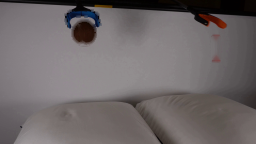

CODING AGENTS AS PIXEL WORLD MODELS
traex/Seed-2.1-Pro-0915 · 0001
尚未保存可播放视频
Static locked-off single-shot with fixed frame throughout filmed with constant framerate in real-time. The scene shows a realistic scientific demonstration. The scene only contains the described setup and actions. Two pillows are on a table and two grabber tools are positioned above them. The grabber tools release the brown tennis ball and the orange block.
failed逐轮保存的候选
回放视频、检查图与代码变化。
每份候选均可单独播放。实际图片检查记录在下方工具轨迹中。
可观测工具轨迹
实际执行的命令与返回图片。
命令 1exit 0
/bin/bash -lc 'cat prompt.txt GENERATION_RULES.md && ls -la'
命令 2exit 0
/bin/bash -lc "cat artifact_io.py && python3 -c \"from PIL import Image; im=Image.open('first_frame.png'); print(im.size, im.mode)\""命令 3exit 1
/bin/bash -lc "cd . && python3 - <<'EOF'
import numpy as np
from PIL import Image
im = np.array(Image.open('first_frame.png').convert('RGB'))
print(im.shape)
# find brown ball pixels: brown ~ (90,60,40)
r,g,b = im[...,0].astype(int), im[...,1].astype(int), im[...,2].astype(int)
brown = (r>60)&(r<140)&(g>35)&(g<95)&(b<70)&(r>g+15)&(g>=b)
ys,xs = np.where(brown)
print('brown bbox', xs.min(), ys.min(), xs.max(), ys.max(), 'count', brown.sum())
# orange block: bright orange
orange = (r>150)&(g>40)&(g<110)&(b<60)
ys2,xs2 = np.where(orange)
print('orange bbox', xs2.min(), ys2.min(), xs2.max(), ys2.max(), 'count', orange.sum())
# blue
blue = (b>120)&(r<80)&(g>60)
ys3,xs3 = np.where(blue)
print('blue bbox', xs3.min(), ys3.min(), xs3.max(), ys3.max(), 'count', blue.sum())
EOF"命令 4exit 1
/bin/bash -lc "cd . && python3 - <<'EOF'
import numpy as np
from PIL import Image
im = np.array(Image.open('first_frame.png').convert('RGB'))
# sample regions
for (y,x) in [(45,217),(45,84),(30,84),(20,210),(50,218),(55,216)]:
print((y,x), im[y,x])
# brown ball tight: restrict x<120
r,g,b = im[...,0].astype(int), im[...,1].astype(int), im[...,2].astype(int)
brown = (r>60)&(r<130)&(g>35)&(g<90)&(b<65)&(r>g+15)
brown[:, 120:] = False
ys,xs=np.where(brown)
print('ball', xs.min(),ys.min(),xs.max(),ys.max(),brown.sum())
# orange block region x>200, y>25
orange = (r>160)&(g>30)&(g<100)&(b<50)
orange[:, :200]=False
orange[:25,:]=False
ys2,xs2=np.where(orange)
print('block', xs2.min(),ys2.min(),xs2.max(),ys2.max(),orange.sum())
# blue
blue = (b>110)&(r<70)
ys3,xs3=np.where(blue)
print('blue', xs3.min(),ys3.min(),xs3.max(),ys3.max())
# pillow top edge: find light pixels
light = (r>180)&(g>180)&(b>170)
for x in [40,80,120,170,220]:
col = np.where(light[:,x])[0]
print('col',x, col.min() if len(col) else None)
EOF"命令 5exit 0
/bin/bash -lc "cd . && python3 - <<'EOF'
import numpy as np
from PIL import Image
im = np.array(Image.open('first_frame.png').convert('RGB'))
r,g,b = im[...,0].astype(int), im[...,1].astype(int), im[...,2].astype(int)
orange = (r>100)&(g<60)&(b<40)&(r>g*2)
orange[:, :200]=False; orange[:25,:]=False
ys,xs=np.where(orange)
print('block', xs.min(),ys.min(),xs.max(),ys.max(), 'count', orange.sum())
brown = (r>50)&(r<130)&(g>25)&(g<90)&(b<70)&(r>g+5)
brown[:, 115:]=False; brown[:14,:]=False
ys,xs=np.where(brown)
print('ball', xs.min(),ys.min(),xs.max(),ys.max(), 'count', brown.sum())
# centroid
print('ball centroid', xs.mean(), ys.mean())
# pillows
light = (r>170)&(g>170)&(b>160)
for x in [30,60,100,140,180,220,250]:
col=np.where(light[:,x])[0]
print('pillow top col',x, col.min() if len(col) else None)
# wall color samples
for y,x in [(60,128),(100,128),(120,128),(90,200)]:
print('wall',(y,x),im[y,x])
EOF"命令 6exit 0
/bin/bash -lc "cd . && python3 - <<'EOF'
import numpy as np
from PIL import Image
im = np.array(Image.open('first_frame.png').convert('RGB'))
r,g,b = im[...,0].astype(int), im[...,1].astype(int), im[...,2].astype(int)
# ball mask
ball = (r>50)&(r<130)&(g>25)&(g<90)&(b<70)&(r>g+5)
ball[:, 115:]=False; ball[:12,:]=False; ball[50:,:]=False
ys,xs=np.where(ball)
print('ball bbox', xs.min(),ys.min(),xs.max(),ys.max(), 'centroid', xs.mean().round(1), ys.mean().round(1))
# white seam pixels inside ball area
seam = (r>140)&(g>130)&(b>120)
seam[:12,:]=False; seam[50:,:]=False; seam[:,:60]=False; seam[:,100:]=False
ys2,xs2=np.where(seam)
if len(ys2): print('seam bbox', xs2.min(),ys2.min(),xs2.max(),ys2.max(), len(ys2))
# block mask
blk = (r>100)&(g<70)&(b<45)&(r>g*2)
blk[:, :200]=False; blk[:20,:]=False
ys3,xs3=np.where(blk)
print('block bbox', xs3.min(),ys3.min(),xs3.max(),ys3.max())
# blue grabber
blue=(b>100)&(b>r+40)&(g>50)
ys4,xs4=np.where(blue)
print('blue bbox', xs4.min(),ys4.min(),xs4.max(),ys4.max())
# orange grabber handle (top right): orangeish above y25
og=(r>120)&(g>50)&(g<120)&(b<60)
og[28:,:]=False
ys5,xs5=np.where(og)
print('orange handle bbox', xs5.min(),ys5.min(),xs5.max(),ys5.max())
# pillow top profile: pillow pixels = bright & low saturation
pill=(r>150)&(abs(r-g)<25)&(abs(g-b)<25)
for x in range(20,256,12):
col=np.where(pill[:,x])[0]
print(x, col.min() if len(col) else '-')
EOF"命令 7exit 0
/bin/bash -lc "cd . && python3 - <<'EOF'
import numpy as np
from PIL import Image
im = np.array(Image.open('first_frame.png').convert('RGB'))
gray = im.mean(2)
# top of pillow = first y from top where brightness > 110 over a run
for x in range(16,256,10):
col=gray[:,x]
top=None
for y in range(60,143):
if col[y]>110 and col[y+1]>110:
top=y;break
print(x, top)
print()
# check seam between pillows around x 130-150: dark vertical gap
for x in [120,130,138,145,150,160]:
col=gray[:,x]
dark=[y for y in range(95,143) if col[y]<90]
print(x, dark[:8], '...' if len(dark)>8 else '')
EOF"命令 8exit 0
/bin/bash -lc "cd . && python3 - <<'EOF'
import numpy as np
from PIL import Image
im = np.array(Image.open('first_frame.png').convert('RGB'))
gray = im.mean(2)
for x in [40,80,120,160,200,240]:
print('x',x, np.round(gray[90:140:4,x],1))
EOF"命令 9exit 0
/bin/bash -lc "cd . && python3 - <<'EOF'
import numpy as np
from PIL import Image
im = np.array(Image.open('first_frame.png').convert('RGB')).astype(float)
gray = im.mean(2)
gy = np.diff(gray,axis=0) # positive = gets brighter downward
for x in range(24,256,8):
col=gy[85:135,x-2:x+3].mean(1)
y = 85+int(np.argmax(col))
print(x, y, round(col.max(),1))
EOF"命令 10exit 0
/bin/bash -lc "cd . && python3 - <<'EOF'
for m in ['cv2','scipy','numpy','PIL']:
try:
mod=__import__(m); print(m, getattr(mod,'__version__','ok'))
except Exception as e:
print(m,'MISSING',e)
import numpy as np
from PIL import Image
im = np.array(Image.open('first_frame.png').convert('RGB'))
r,g,b = im[...,0].astype(int), im[...,1].astype(int), im[...,2].astype(int)
# block component analysis: strong red pixels in right region
blk = (r>110)&(g<75)&(b<50)&(r>g+50)
blk[:, :195]=False
import cv2
n, labels, stats, cent = cv2.connectedComponentsWithStats(blk.astype('uint8'),8)
for i in range(1,n):
x,y,w,h,a = stats[i]
print('comp',i,'bbox',x,y,w,h,'area',a,'cent',cent[i].round(1))
EOF"命令 11exit 0
/bin/bash -lc "cd . && python3 - <<'EOF'
import numpy as np
from PIL import Image
im = np.array(Image.open('first_frame.png').convert('RGB')).astype(float)
gray = im.mean(2)
# block region dump
for y in range(18,62,2):
row=[]
for x in range(208,226):
v=gray[y,x]; row.append(f'{int(v):3d}')
print(y, ' '.join(row))
EOF"命令 12exit 0
/bin/bash -lc "cd . && mkdir -p .tmp/explore && python3 - <<'EOF'
import numpy as np, cv2
from PIL import Image
im = np.array(Image.open('first_frame.png').convert('RGB'))
h,w = im.shape[:2]
# rough masks
r,g,b = im[...,0].astype(int), im[...,1].astype(int), im[...,2].astype(int)
ball = ((r>50)&(r<140)&(g>25)&(g<100)&(b<80)&(r>=g)).astype('uint8')
ball[:, 115:]=0; ball[:10,:]=0; ball[52:,:]=0; ball[:,:58]=0
# exclude blue claw
blue = ((b>100)&(b>r+30)).astype('uint8')
ball = ball & (1-cv2.dilate(blue,np.ones((3,3),np.uint8)))
ball = cv2.dilate(ball, np.ones((3,3),np.uint8))
blk = ((r>90)&(g<85)&(b<55)&(r>g+35)).astype('uint8')
blk[:, :205]=0; blk[:34,:]=0; blk[62:,:]=0
blk = cv2.dilate(blk, np.ones((3,3),np.uint8))
mask = np.zeros((h,w),np.uint8)
mask[ball>0]=255; mask[blk>0]=255
plate = cv2.inpaint(im, mask, 4, cv2.INPAINT_TELEA)
Image.fromarray(plate).save('.tmp/explore/plate.png')
Image.fromarray(mask).save('.tmp/explore/mask.png')
diff = np.abs(im.astype(int)-plate.astype(int)).sum(2)
print('diff stats near ball:', diff[15:45,65:98].max(), diff[15:45,65:98].mean())
print('diff stats near block:', diff[36:60,210:222].max(), diff[36:60,210:222].mean())
print('wall diff elsewhere (should be 0):', diff[70:90,130:180].max())
EOF"视觉工具实际返回图片 1

视觉工具实际返回图片 2

保存候选 0 份；完成命令 12 次；可验证图片返回 2 张。原始 API 响应与完整日志保留在本地。